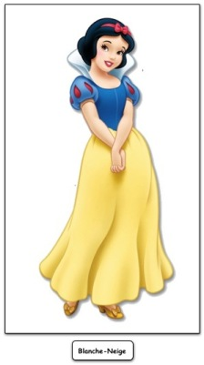

Lorsque Mufasa meurt, Simba se sauve dans la forêt car il croit être responsable de la mort de son père. Il essaie d'oublier son royaume avec ses nouveaux amis Pumba et Timom. Heureusement, son amie d'enfance Lana va le retrouver et le ramener à la maison où le méchant Scar terrorise tout le monde.
Dumbo l'éléphant volant
Dumbo vient au monde dans un cirque où sa mère travaille.
Dumbo a une caractéristique particulière. Il a de très grandes oreilles. Cela le rend malheureux car tout le monde se moque de lui et il n'a pas d'amis.
Un jour, Dumbo décide d'apprendre à voler grâce à ses oreilles. Lorsqu'il y parvient il devient alors la vedette du cirque et plus personne ne se moque de lui.
Blanche-Neige et les 7 Nains
Blanche-Neige est chassée de sa maison par sa méchante belle-mère.
Elle vit dans la forêt avec ses amis les 7 nains. Mais sa méchante belle-mère va la retrouver et essayer de la tuer.
Heureusement, un prince la sauvera.

Alice au pays des merveilles
Alice suit le lapin blanc dans son terrier.
Ce qui est étrange, c'est que le lapin est vêtu d'une redingote, qu'il regarde toujours sa montre et qu'il passe son temps à dire qu'il est en retard.
En suivant le lapin, Alice se retrouve dans un pays vraiment étrange où vivent le chapelier, Humpty Dumpty et la Dame de Coeur.
La Belle au Bois Dormant
Aurore est le fille du roi.
À sa naissance, elle reçoit un mauvais sort d'une vieille fée jalouse. Par ce sort, Aurore devrait mourir en se piquant avec un fuseau.
Une de ses bonnes fées marraines réussit à modifier le sort. Aurore ne mourra pas mais elle s'endormira jusqu'à ce qu'un prince la trouve et la réveille d'un baiser.
Peter Pan
Peter Pan est un petit garçon qui refuse de grandir.
Un soir il vient chercher Wendy, John et Michel pour les amener avec lui au pays imaginaire. Ils renconteront les garçons perdus, les amis de Peter, ainsi que le pirate le Capitaine Crochet. Celui-ci déteste Peter Pan qui lui a coupé une main et l'a donné à manger à un crocodile.
Pinocchio
Pinocchio est une marionnette de bois créée par Geppetto qui désire avoir un petit garçon.
La fée bleue donne vie à la marionnette en lui permettant de parler et de bouger. Pinocchio rencontre alors toutes sortes de personnages pas toujours gentils qui lui font vivre toutes sortes d'aventures.
Il ne faut pas oublier que le nez de Pinocchio s'allonge lorsqu'il raconte des mensonges.
Heureusement, Pinocchio devient finalement une gentille marionnette et la fée bleue le transforme en véritable petit garçon pour le grand plaisir de Geppetto.